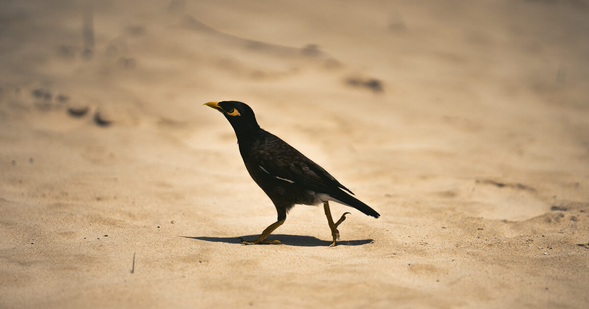

Back to Hobbies & Blog

📷 Photography
From landscape and architectural photography to visual arts and cultural heritage. I find beauty in geological formations, old buildings, and the play of light on stone surfaces. You can see more on my JuzaPhoto gallery.
May 2026
The Last Frontier of Sight: Artemis II's Visual Legacy
From Earthrise to the lunar limb of Orion — how the photographs of Artemis II are rewriting the visual history of space exploration.
Read more →
April 2026
Birding in Hawaii with the Sony 70–200 f/2.8 GM
the Red-crested Cardinal and the Common Myna, their introductory stories, photography tips and the lesson of always having your camera ready.
Read more →